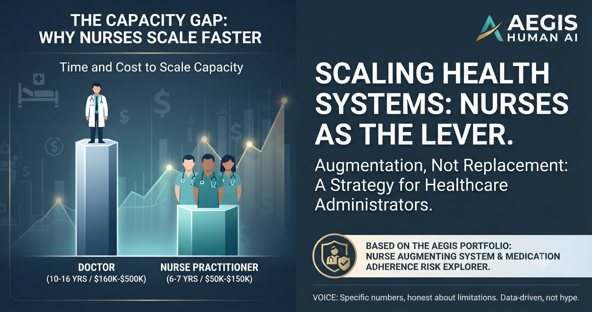

A clinical decision-support system built under the AEGIS research programme (Artificial Intelligence Guided Engineering System), whose founding rule is the same one this whole site is built on: AI augments a clinician's judgment, it does not replace it. The question here was narrow and real — which heart-failure patients are likely to be readmitted within 30 days — and the interesting part isn't any one model's accuracy. It's that eight independently built models, using completely different mathematics, all pointed at the same answer.
Why this matters beyond the model: readmission risk isn't just a per-patient number. Aggregated across a ward or a region, the same signal becomes a resource-planning input — beds, staffing, and follow-up capacity a hospital or health ministry can forecast against, rather than discover after the fact. That planning use case matters most in aging-population health systems, where readmission pressure compounds faster than capacity does.
Most clinical ML projects start by throwing raw measurements at a model and seeing what sticks. This one started differently: before touching machine learning at all, the first step was clinical exploratory data analysis, followed by hand-engineering a composite feature called the Heart Clinical Abnormality Score (HCAS) — a single number that summarizes cardiovascular severity from routine measurements a nurse or clinician would already have on hand (blood pressure, heart rate, BNP, creatinine, sodium, and related vitals). The reasoning: a model built on a clinically meaningful summary is easier to trust and easier to explain than one built purely on whatever raw columns happened to be in the spreadsheet.
Only after HCAS existed as a feature did model-building start. Eight independent classifiers were trained and compared on identical data and metrics, deliberately spanning very different mathematical approaches so that any agreement between them couldn't be explained by shared assumptions: Logistic Regression, Random Forest, CatBoost, SVM, XGBoost, an Explainable Boosting Machine, LightGBM, and a Stacking Ensemble that combines several of the others.
| Model | Family | Role in this project |
|---|---|---|
| Logistic Regression | Linear | Baseline, interpretable coefficients |
| Random Forest | Tree ensemble | Selected as the production model |
| CatBoost | Gradient boosting | Convergence check |
| SVM | Kernel method | Convergence check |
| XGBoost | Gradient boosting | Convergence check |
| Explainable Boosting Machine | Generalized additive | Convergence check |
| LightGBM | Gradient boosting | Convergence check |
| Stacking Ensemble | Meta-ensemble | Convergence check |
This project deliberately reports on agreement across models rather than a single accuracy/ROC-AUC leaderboard number — the clinical claim being tested was "do independent methods agree," not "which model scores highest."
Random Forest was carried forward into a working prototype — the AEGIS Clinical Decision Support System, a desktop application that takes a patient's routine measurements as input, computes HCAS internally without ever surfacing it to the user, and returns an interpretable readmission-risk score. The clinician never needs to know a composite score is running underneath; they see the inputs they'd already collect and a risk assessment they can act on.
Because this sits inside a broader research programme rather than a one-off script, the project also carries a five-stage IP protection plan (ownership, invention disclosure, separating what's patentable from what's a trade secret from what's copyrightable, an innovation blueprint, and a commercialization step) and four possible paths to real-world use: a SaaS offering for hospital systems, licensing to nursing homes, a government/public-health deployment, and a direct-to-consumer version. None of these are built yet — they're the deliberate next steps once the clinical case for the model is solid, which is exactly the order this project did things in: score first, model second, product last.